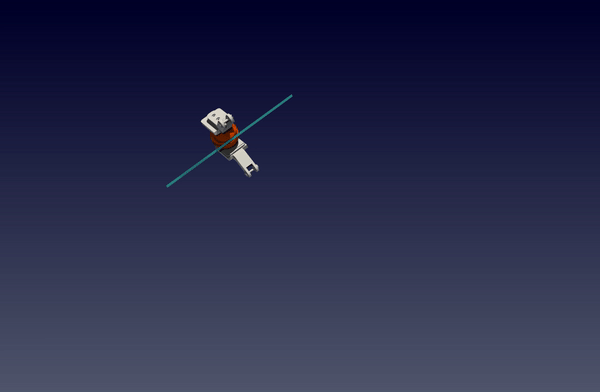
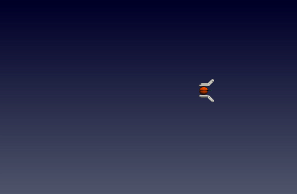
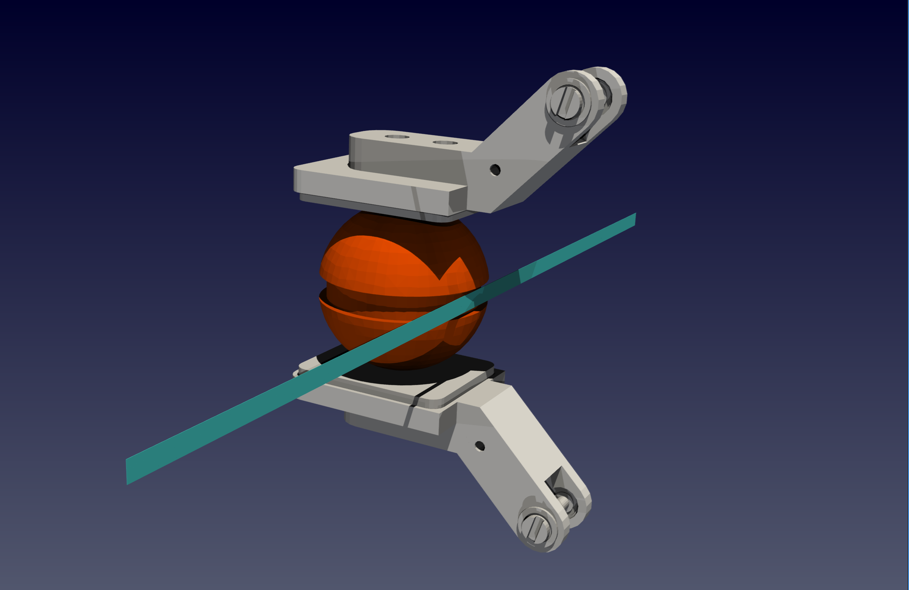

Sling Shot¶
In this tutorial, we are going to develop an environment from scratch using polyfempy and Python for a sling-shot. In this scene, we have two fingers holding the ball and the fingers will pull the rubber band and then release the ball into the air.
 
Installation of Python Bindings of PolyFEM¶
In this tutorial, we are assuming you have already installed polyfempy on your machine. If not, please follow the instructions here. Note that there’s no need to install standalone PolyFEM. All the dependencies that polyfempy requires will be installed automatically including PolyFEM. Also please note that please install and compile polyfempy from source by doing
python setup.py install
After installation, please try to run
python -c "import polyfempy as pf"
polyfempy is installed successfully. Note that this tutorial is using Conda virtual environment.
Installation of Other Dependencies¶
To build this project, there are some other dependencies we need. Note that meshio and igl are optional. They are only required if you want to render the scenes with python.
1. numpy
conda install numpy
2. meshio(optional)
conda install -c conda-forge meshio
3. python bindings of libigl(optional)
conda install -c conda-forge igl
Data Preparation¶
The data needed in this tutorial can be found here. For triangle meshes, they are in surf_mesh folder and the volume meshes are in vol_mesh folder The volume mesh files are all made by fTetWild. Feel free you make you own sphere, rubber band and fingers.
Tutorial¶
All the code and JSONs can be found at Github: Slingshot Tutorial. The file tree of this project is:
project
|___pushbox
| |___src
| |___assets
| |___data
| | |___surf_mesh
| | |___vol_mesh
| |___json
|___test.py
Json Environment Setup¶
- The first step is to make a JSON file
slingshot.jsonin the JSON folder for the initial setup with the sphere, rubber band and fingers in it. Let’s load the objects!The first mesh is a 21cm rubber band. It is originally a mat but then rescaled to the shape of a rubber band. The second mesh is a sphere with a groove in the middle part of its body in case the rubber band might slide off the sphere if the friction is not enough. As for the two fingers, there’s no need to consider their deformation so they are set to obstacles. The displacements are not zero vectors because the fingers need to squeeze the ball and hold the ball tightly enough to pull the rubber band without sliding off the fingers while still pulling. Note that the"geometry": [ { "mesh": "slingshot/assets/data/vol_mesh/mat.msh", "transformation": { "translation": [ 0.018, 0.115, 0 ], "rotation": [ 0, 0, 90 ], "scale": [ 0.00385, 0.01, 0.21 ] }, "volume_selection": 1, "advanced": { "normalize_mesh": false }, "surface_selection": [ { "id": 3, "axis": -3, "position": -0.1 }, { "id": 3, "axis": 3, "position": 0.1 } ] }, { "mesh": "slingshot/assets/data/vol_mesh/sphere_grooved.msh", "transformation": { "translation": [ 0, 0.115, 0 ], "rotation": [ 90, 0, 0 ], "scale": 0.0386 }, "volume_selection": 2, "advanced": { "normalize_mesh": false } }, { "mesh": "slingshot/assets/data/surf_mesh/left_finger.obj", "is_obstacle": true, "enabled": true, "transformation": { "translation": [ 0.04, 0.16032, 0.0 ], "rotation": [ 0, -90, 0 ], "scale": 1 }, "surface_selection": 1000 }, { "mesh": "slingshot/assets/data/surf_mesh/right_finger.obj", "is_obstacle": true, "enabled": true, "transformation": { "translation": [ 0.04, 0.06965, 0.0 ], "rotation": [ 0, -90, 0 ], "scale": 1 }, "surface_selection": 1001 } ]volume_selectionhere means to select the entire volume of the tetrahedron mesh to be simulated and thesurface_selectionmeans the surface area that you want to select. For example, both fingers are obstacles and they are triangle meshes. So to move and simulate them, I would like to select the entire finger. Thus here I can select them by giving the whole mesh an index:In some scenarios, maybe the user only wants to select a part of the mesh and give the selected part a different movement from other parts. Then this could be done by setting the surface_selection part with specialized fields. For example, in this slingshot case, I would like to set the two ends of the rubber band to be still and the rest part to be able to move freely so that the rubber band will be extended while the sphere is pulled back by two fingers. To achieve this, the two ends of the rubber band can be selected by:{ "mesh": "slingshot/assets/data/surf_mesh/right_finger.obj", "is_obstacle": true, ... "surface_selection": 1001 }The detailed explanation of{ "mesh": "slingshot/assets/data/vol_mesh/mat.msh", ... "surface_selection": [ { "id": 3, "axis": -3, "position": -0.1 }, { "id": 3, "axis": 3, "position": 0.1 } ] }id,axisandpositioncan be found at Selections in PolyFEM - The second thing is to give proper material parameters to these objects. Since we are using a rubber band and also we want to grasp the ball tightly enough, we can use the material parameters for both of them. If you don’t know the parameters of rubber, Just Google for Them! Feel free to use other material parameters.
"materials": [ { "id": 2, "E": 10000000.0, "nu": 0.4, "rho": 1150, "type": "NeoHookean" }, { "id": 1, "E": 10000000.0, "nu": 0.4, "rho": 1150, "type": "NeoHookean" } ] - Since the sphere is all free and the only actuator are the fingers, there is no need to set Dirichlet boundary conditions for the sphere. As for the rubber band, although most of the rubber band is free to move, the two sides of the rubber band need to be static like attached to two poles. Then the Dirichlet boundary condition with
"id":3is set to zero for the two ends of the rubber band.To view the whole JSON configuration file, please go to sling_shot.json."boundary_conditions": { "obstacle_displacements": [ { "id": 1000, "value": [ "0", "-0.02 * t", "0" ] }, { "id": 1001, "value": [ "0", "0.02 * t", "0" ] } ], "rhs": [ 0, 9.81, 0 ], "dirichlet_boundary": [ { "id": 3, "value": [ 0, 0, 0 ] } ] }
After loading every object, the environment should look like 
Python Environment Development¶
In this section, we will develop a python environment to do the slingshot.
Class Initialization¶
In the src folder, create a python file slingshot.py. In this file, let’s first import necessary libraries and create a PushBox class with its __init__ function:
import polyfempy as pf
import json
import numpy as np
class SlingShot:
def __init__(self) -> None:
self.asset_file = 'slingshot/assets/json/sling_shots.json'
with open(self.asset_file,'r') as f:
self.config = json.load(f)
self.dt = self.config["dt"]
self.step_count = 1
self.solver = pf.Solver()
self.solver.set_log_level(3)
self.solver.set_settings(json.dumps(self.config))
self.solver.load_mesh_from_settings()
self.dt = self.config["dt"]
self.t0 = self.config["t0"]
self.solver.init_timestepping(self.t0, self.dt)
self.id_to_mesh = {}
self.id_to_position = {}
self.id_to_vf = {}
for mesh in self.config["meshes"]:
self.id_to_mesh[mesh["body_id"]] = mesh["mesh"]
self.id_to_position[mesh["body_id"]] = mesh["position"]
# To grasp and hold the sphere very tightly
self.pre_steps = 4
for i in range(self.pre_steps):
self.run_simulation()
self.cumulative_action = {"0":np.array([0, -0.02 * self.dt * self.step_count, 0, 0.02 * self.dt * self.step_count]), "1":np.array([0, 0.02 * self.dt, 0, 0.02 * self.dt])}
__init__ function, we load the environment configuration from the JSON file we just made, initialize a step counter and the PolyFEM solver. Here we set the log_level of PolyFEM to 3 which only displays the errors and warnings from PolyFEM. Feel free to change the log level to get more information or less based on docs for log_levels (More specifically, –log_level ENUM:value in {trace->0,debug->1,info->2,warning->3,error->4,critical->5,off->6} OR {0,1,2,3,4,5,6}).
One thing to mention is that polyfempy is always calculating the result for this time step based on the displacement from the initial position which is the position read from the JSON file. However, we only pay close attention to the action or movement we want to exert for this timestep, so self.cumulative_action would take care of previous displacements.
Different from the PushBox environment, in this __init__ function, we need to squeeze the sphere to a certain point so that the sphere would never slide off the fingers unless the user decides to release it. That’s why at the end of the __init__ function four pre_steps are trying to close the fingers and squeeze the rubber ball.
Take the action from the user¶
The solver is already initialized in the previous section, now we can design an interface for the users to pass new actions to the sphere from their side. In this tutorial, the action space is 4-dimensional and consists of movement of the fingers along the x-axis, y-axis, and z-axis and one action to close or open the two fingers. The argument actions in this function are a dictionary and contain the actions for both fingers.
def set_boundary_conditions(self, actions:dict):
t0 = self.t0
t1 = t0 + self.dt
for mesh_id, action in actions.items():
self.solver.update_obstacle_displacement(
int(mesh_id),
[
f"{self.cumulative_action[mesh_id][0]} + ((t-{t0})*{action[0]})/({t1-t0})",
f"{self.cumulative_action[mesh_id][1] + self.cumulative_action[mesh_id][3]} + ((t-{t0})*{action[1] + action[3]})/({t1-t0})",
f"{self.cumulative_action[mesh_id][2]} + ((t-{t0})*{action[2]})/({t1-t0})"
]
)
self.cumulative_action[mesh_id] += action
Run simulation for the current timestep¶
def run_simulation(self):
self.solver.step_in_time(0, self.dt, self.step_count) # run simulation to the current time step, and the length of each timestep is self.dt
self.step_count += 1 # increment the step counter
self.t0 += self.dt # increment the starting time point for the next time step
To simulate the current timestep, we need to call self.solver.step_in_time, where the first argument of this function is the initial time of the simulation and the second argument is the time length for each time step and the third argument is the total time steps have been simulated now.
Get the position of each object¶
If you want to get the position information of each object in the simulation when you make interactions with the environment, you can get the positions of each mesh using this function.
def get_object_positions(self):
points, tets, _, body_ids, displacement = self.solver.get_sampled_solution()
self.id_to_position = {}
self.id_to_vertex = {}
for mesh_id, _ in self.id_to_mesh.items():
vertex_position = points + displacement
self.id_to_vertex[mesh_id] = vertex_position[body_ids[:,0]==mesh_id]
mean_cell_id = np.mean(body_ids[tets], axis=1).astype(np.int32).flat
tet_barycenter = np.mean(vertex_position[tets], axis=1)
self.id_to_position[mesh_id] = np.mean(tet_barycenter[mean_cell_id == mesh_id], axis=0)
return self.id_to_position
This function gets sample vertices for each mesh from the solver and these vertices are averaged to get a “centroid” of the object to represent its position.
Step function exposed to the user¶
def step(self, action: np.ndarray):
actions = {
# x, y, z gripper_displacement
"0": np.array([action[0],
action[1],
action[2],
-1 * action[3]/2]),
"1": np.array([action[0],
action[1],
action[2],
action[3]/2])
}
self.set_boundary_conditions(actions)
self.run_simulation()
return self.get_object_positions()
numpy array containing the x,y,z movement of the two fingers and the displacement between the two fingers for the current timestep. Then the action needs to be transferred into a dictionary that "self.set_boundary_conditions" function would recognize for both of the fingers. At the same time, the two fingers’ displacements are coupled so in the actions dictionary, the displacements need to be decoupled from both fingers and let them move in opposite directions.
To view the implementation of the whole class, please go to slingshot.py.
Test of the Environment¶
Here’s a very simple test case:
from slingshot.src.slingshot import SlingShot
import numpy as np
env = SlingShot()
print("Initialzied.")
# pull the rubber band
for i in range(3):
action = np.array([0.1,0,0,0])
env.step(action)
# release it
action = np.array([0,0,0,-0.1])
env.step(action)
# let it fly
for i in range(20):
action = np.array([0,0,0,0])
env.step(action)
shell=
python test.py
The result should be like the gifs at the beginning.